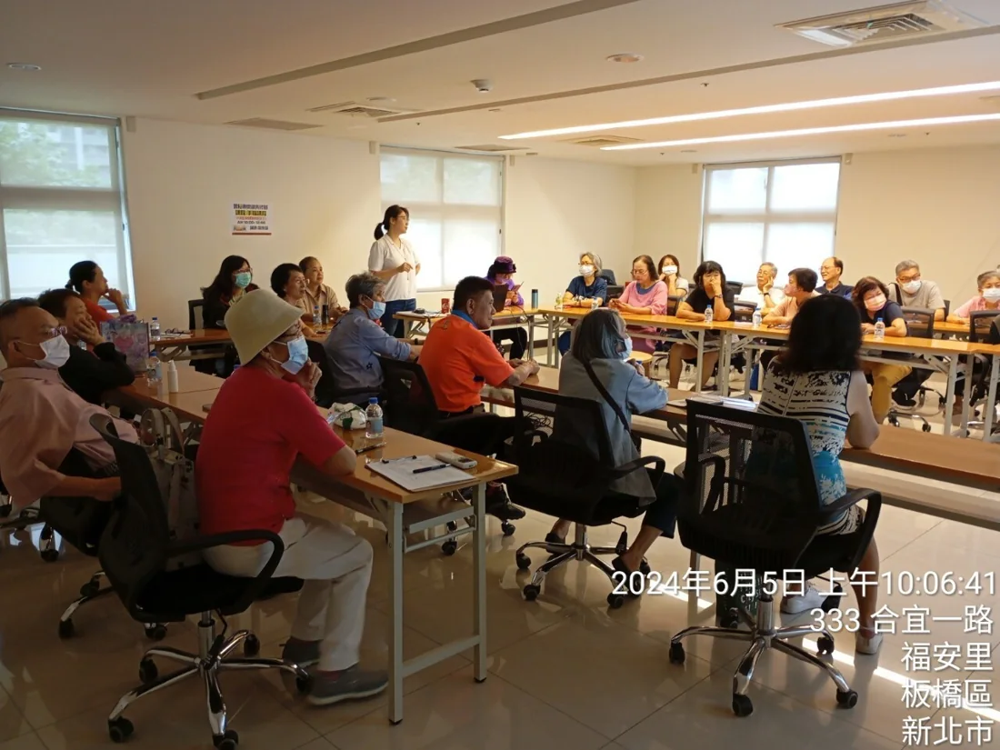
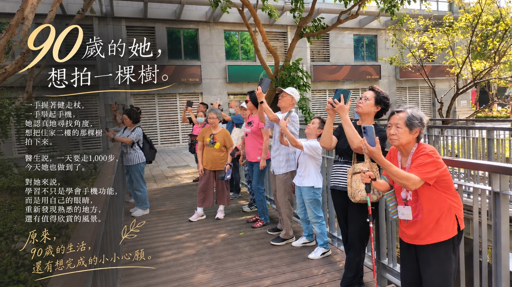

教育培訓
從學員平常遇到的問題開始，留時間實作，也把能自己練習的方法帶回家或帶回工作。
- 銀髮數位學習與智慧型手機應用
- AI 工具與生活數位應用
- 跨世代共學及課程設計
- 社區學習活動與講師媒合
- 依不同學員程度調整教學內容
- TTQS 人才發展品質管理系統導入與訓練流程規劃
- 大人提、小人提計畫申請準備、辦訓與執行協作
從一堂課的安排，到一個社區或組織想長期做的事，我可以和你一起規劃。
從學員平常遇到的問題開始，留時間實作，也把能自己練習的方法帶回家或帶回工作。
先聽住戶和現場夥伴怎麼生活、怎麼工作，再一起找適合這個社區的參與方式。
釐清想做的事、誰能一起做，再把資源、分工和時程安排到現場接得住。
記下課堂和社區裡的小事，也記下那些讓一個想法能繼續走下去的工作。

教育培訓 2023 年至今
從長者第一次向 AI 提問，到職場中的多輪對話與資料彙整，我依循 PDDRO 的邏輯，用生活情境與實際案例，陪學員練習開口、追問和查核，讓數位工具逐步成為日常可用的方法。
閱讀故事
社區培力 2024 年至今
一個讓人安心的公寓大廈，需要日常管理，也需要鄰里願意互相招呼和出力。從管委會、住戶到總幹事、保全和清潔夥伴，一起把熟悉的公共空間變成能相遇、能參與的地方。
閱讀故事
品牌與專案企劃
從社區母語工作坊到人才培育，企劃的價值在於把需求、分工與成果接在一起。導入 TTQS 時，我把同樣的方法用在訓練需求、課程設計與課後檢視，透過一系列培力工作坊，讓產業人才有機會拓展技能，也深化各自的專長。
閱讀故事「幸誼」，是幸福的友誼。
從視覺設計出發，後來走進教室、協會和公寓大廈。這些工作看起來不同，做久了，我發現自己一直在做同一件事：聽懂每個人在意什麼，找出大家願意一起開始的地方。
在教室裡，我陪長輩把一個問題問完，等他自己再試一次。在社區裡，我也想聽住戶、總幹事和第一線夥伴怎麼看同一件事，因為他們留意到的日常，會改變我們安排活動的方式。
做了這些事，我最在意的是：課程或活動結束之後，學員還記得下一次怎麼做，社區也有人願意把那一步接下去。
洽詢合作專業是一種能力，而溫度，是讓這份能力走得更遠的原因。
如果你正在規劃課程、社區活動或專案，歡迎和我聊聊目前的想法，以及你希望邀請誰一起參與。